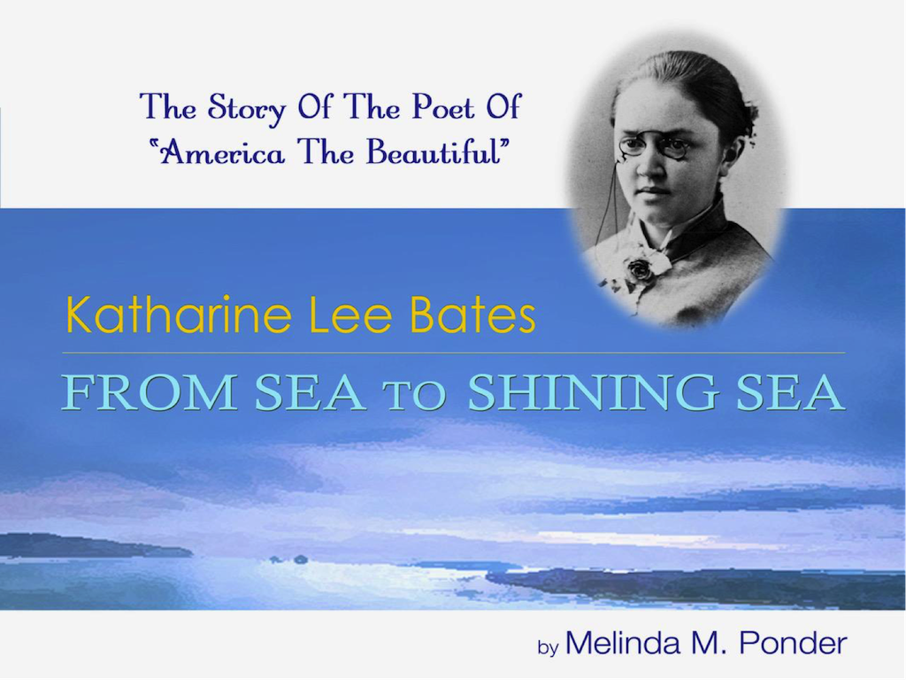
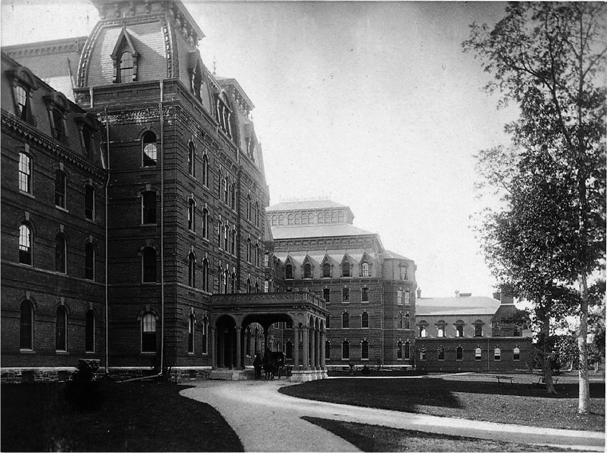

Can you imagine, as a published writer and college professor, having to rely on personal connections to get research materials from the library because, as a woman, you cannot enter it? Women were not permitted in the Harvard University Library in the 1890s, and thus Wellesley graduate and faculty member Katharine Lee Bates was barred from entry—she had to find a male Harvard professor willing to help her. Renowned author, scholar, professor, feminist, and activist, Bates personifies the dilemma that so many educated women faced at the end of the 19th century.
As our country is polarized today by cultural and political issues, a timely new biography offers insights on what brings us together. Katharine Lee Bates: From Sea to Shining Sea by Melinda M. Ponder tells the fascinating story of one of America’s most celebrated writers.
We all know the lines “America! America! /God shed His grace on thee/And crown thy good with brotherhood/From sea to shining sea!” that end the final stanza of Bates’s famous poem, set to music soon after publication, as we sing it today. While beloved and performed frequently, the poem’s origins are less well known, including its connections to Chicago.

Author Melinda Ponder, Professor of English Emerita at Pine Manor College and Nathaniel Hawthorne scholar, was in town recently to talk about her research and the book with the Chicago Wellesley Club. A Wellesley graduate herself, she had been intrigued by Bates’s story from her days as a college English major, in the department where Bates had herself had taught.
“The more I learned about Katharine’s life and career as I read her 30 books, many letters and diaries, and travelled to places important to her, I wanted to tell the story of this trail-blazing and complicated woman. I realized her life can inspire us today as we face some of the same issues that she confronted,” explained Ponder.
Born in Falmouth, Massachusetts, Katharine Lee Bates and her three siblings were raised by her resourceful mother after the early death of their father, a Congregational minister, in 1859, days after he baptized his infant daughter.
Raised in a home of well-read and creative women, it was early on that Bates began questioning women’s prescribed roles in society. At a young age she wrote in her diary, “[S]ewing is always expected of girls. Why not boys? Boys don’t do much but outdoor work. Girls’ work is most of all indoors. It’s not fair.”
In 1871 her mother moved the family to Grantville, Massachusetts. Wellesley College would be founded nearby four years later by Pauline and Henry Durant, dedicated to the education of young women.

Watching the college being built, Bates was determined to be accepted. She graduated from Newton High School where she prepared for Wellesley’s challenging entrance exams, said to be nearly as tough as Harvard’s. She would be accepted into the Class of 1880, elected class president and class poet, and she even wrote the prize-winning class boat song. Her talents were recognized early.
By 1893 Bates had been named an associate professor of English at Wellesley and had spent a year at Oxford. She was, however, recovering from two disappointing romantic relationships and suffering from depression. She was convinced by a friend to lecture at the Colorado Summer School in Boulder. Crossing the country, she stopped in Chicago to see the World’s Columbian Exposition.
Wellesley was represented at the 1893 World’s Fair but surprisingly not in the Women’s Building, championed by Chicago’s own Bertha Palmer. Former Wellesley president and Dean of Women at the University of Chicago, Alice Freeman Palmer wanted women to be judged on an equal footing with men and placed the exhibit on Wellesley in the Manufacturing and Liberal Arts Building, where Wellesley could compete for a medal (successfully, it turned out). Bates had written the English Department’s section of the award-winning exhibit.
“The Fair made a deep impression on Bates. She was dazzled by its ‘White City,’ sparkling fountains, ponds and lagoons reflecting the white Neo-Classical elegant buildings the color of alabaster,” notes Ponder.
While in Colorado, Bates joined an expedition to the top of Pike’s Peak. She was awed by the view of majestic mountains and rolling plains. Inspired by that vision, the progressive community she found in Colorado, and struck by the hope for the future expressed at the Fair, she sketched out a poem before she left Colorado.
On her way back east, Bates again stopped at the fair in Chicago. “Bates saw in the Fair a symbol of community that was her ideal future for America,” Ponder told her Chicago audience. “She was empowered by the powerful women’s presence at the Fair and by the American artists whose work showed a wide range of Americans at work and play.”
Earlier she had been inspired by Jane Addams’s Hull House to help organize a settlement house in Boston. She visited Jane Addams in Chicago and understood the challenges of urban poverty. When Bates reached home, she saw America in turmoil. The financial depression of 1893 continued to roil the country, pitting working people against immigrants for jobs. Labor unrest was epitomized in the Pullman strike of 1894.
Finally, her deep concern for the conflicts she saw prompted her to complete the poem. She evoked her vision of America’s potential with the “purple mountain majesties” she’d seen from Pike’s Peak and the “alabaster cities” she’d seen at Chicago’s World’s Fair. She wrote its final stanzas and submitted “America” to the Congregationalist, which published it on July 4, 1895. The poem was soon put to music, sung widely to a variety of tunes.
By 1904 the country had suffered through the Spanish American War and following the Boer War in South Africa, Bates rewrote her poem to reflect her anti-war sentiments, which she had been publishing under the name James Lincoln. She added, among others, the phrases “God mend thy every flaw/ Confirm thy soul in self-control/ Thy liberty in law!” and “And crown thy good with brotherhood/From sea to shining sea!”
Published in The Boston Evening Transcript, her revised poem was described as “the American national hymn . . . [that uttered] the patriot’s prayer and faith in America’s perfectibility.”
The song’s popularity continued to grow. Today we sing it to the tune “Materna” written by Samuel A. Ward. Bates gave permission for the song to be published widely in hymnals and songbooks. It was often sung along side the more militaristic “The Star-Spangled Banner,” set to a fast-paced march by John Philip Sousa.
Katharine Lee Bates would continue to teach and write. Author, essayist, and editor, she weighed in on the political, literary, and women’s issues of her day, heralded until her death in 1929 as a feminist leader and national treasure. Two years after her death in 1931, “The Star-Spangled Banner” was voted the national anthem by Congress.
The movement to make “America, the Beautiful” our national anthem continues today. CBS correspondent Lynn Sherr made the case in her 2001 book, America The Beautiful: The Stirring True Story Behind Our Nation’s Favorite Song. Advocates point to its lyricism, lack of militaristic tone, and significantly, ease of singing.
Bates would doubtless be dismayed to know how badly we need the unifying words of “America the Beautiful” today but surely pleased that it has endured for over 115 years.
Ponder’s book is available on Amazon through by clicking here.
Elizabeth Dunlop Richter is a strategic communications consultant and founder of The Richter Group. She can be reached via email at erichter@TheRichterGroup.com.